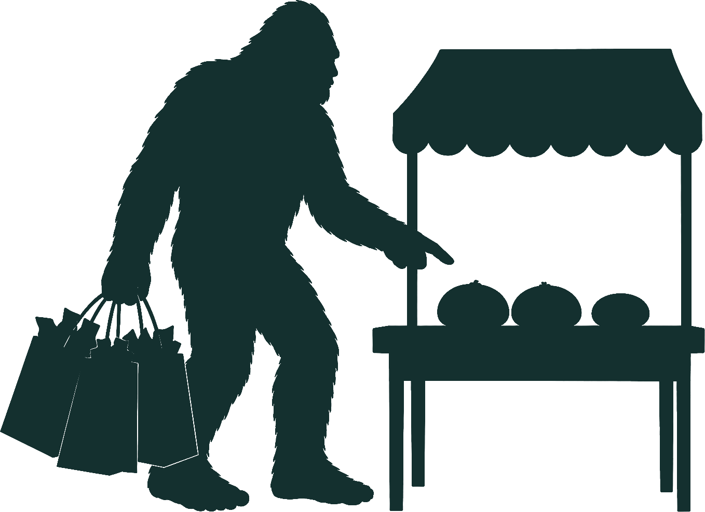

Market stalls & food vendors

Markets trade 11:00am–4:00pm, Saturday and Sunday, at The Bellbrook Hotel. Replace each card below with a confirmed stallholder once the market list is locked in.
[[VENDOR_NAME_1]]
[[VENDOR_DESCRIPTION_1]]
[[VENDOR_NAME_2]]
[[VENDOR_DESCRIPTION_2]]
[[VENDOR_NAME_3]]
[[VENDOR_DESCRIPTION_3]]
Sponsors
The Yowie Festival is a fundraiser for Macleay Valley Hospice and the Bellbrook community — sponsorship directly supports that cause. Thank you to our sponsors so far.
The Bellbrook Hotel
Proud host venue and platinum sponsor of The Yowie Festival.
The UNE Equip Project
A University of New England-led mental health preparedness project for rural communities facing flood, fire and drought — developed in response to Mid North Coast NSW flooding, with local NSW sites at Nymboida/Blicks River, Willawarrin and Wauchope.
[[SPONSOR_NAME_2]]
[[SPONSOR_NAME_3]]
Become a stallholder or sponsor
Calling all market stall holders! Be part of The Yowie Festival this October long weekend and showcase your products at one of the Macleay Valley's most anticipated community events. Market sites are available Saturday, Sunday, or both days, trading 11:00am–4:00pm each day. With live entertainment, family activities, camping, food, and visitors from across the region, it's a great opportunity to promote your business and connect with new customers.
Sites are limited, so book yours today — email bellbrook.yowie.fest@gmail.com for more information, or register interest via Get Involved.